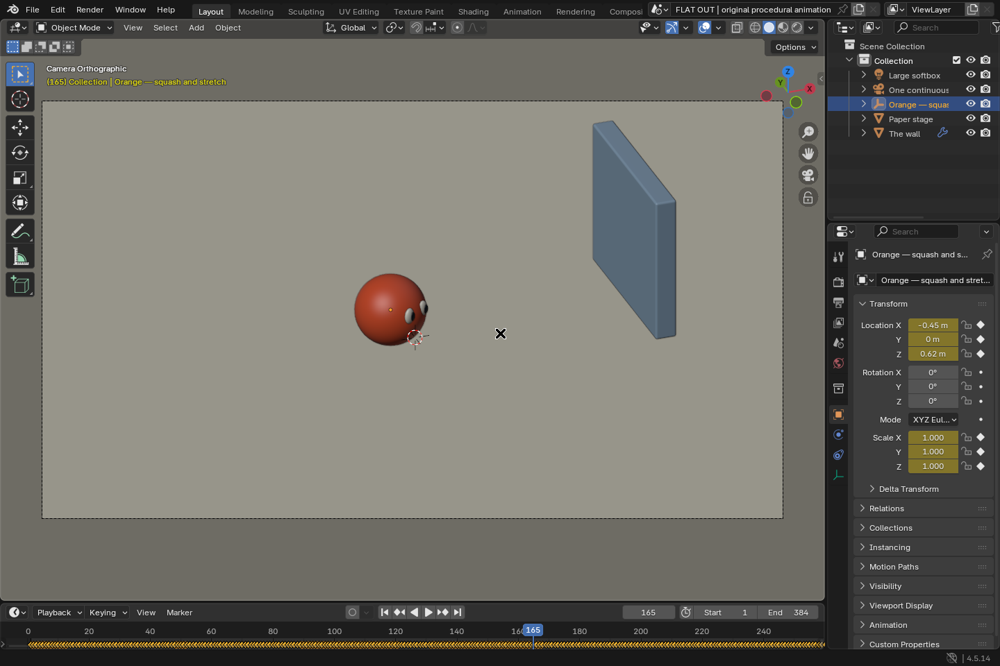

16 seconds, 24 fps. Sound on for the original Foley. Download
Inside Blender
One camera, one character, one wall. Python animates every hop, glance and stretch. A single mathematical shadow travels across the floor and up the wall.
The work-in-progress view below shows the solid-mode scene and its animation keys.

Source code and rendering instructions
Visual description (spoilers)
An orange ball takes a little hop. Its shadow follows. The ball accelerates and leaves the shadow behind, then stops and looks back. The shadow catches up and overtakes it. They race towards a blue wall. The shadow climbs it. The orange hits the wall and squashes flat. Now they are both two-dimensional.